Overview
scribe is a Quickshell module for Hyprland. Press a key, the screen freezes, you drag a box around any text (a video, an image, a PDF, a terminal, an app that does not let you copy) and scribe reads it with Tesseract. The text stays where it is. Drag over the words you want and copy them. With translation switched on you can also translate what was read, right on the screen.
key bind ─▶ qs ipc call scribe start
grim freeze the focused output
ScribeLens drag a region, then select words, one layer window
ocr.py crop, invert dark themes, strips, one tesseract per strip
wl-copy copy
translate.py translate, dictionary, links (only when switched on)
- Select and copy. The original text is never redrawn or covered.
- Translate. Off by default. Card or in place, offline or online.
- Private by construction. The screenshot lives in an owner-only runtime directory and is deleted when the overlay closes.
Install
You need Hyprland, Quickshell, grim, wl-clipboard, tesseract with at least one language pack, and Python 3 with numpy and pillow. Translation needs nothing extra by hand: the offline engine installs itself from the settings panel (it needs python3 -m venv).
sudo pacman -S grim wl-clipboard tesseract tesseract-data-eng python-numpy python-pillow # Arch
git clone https://github.com/lunanoir21/scribe cd scribe ./install.sh --patch
--patch copies the module to ~/.config/quickshell/vendor/scribe, adds the import and ScribeHost {} to your Shell.qml and appends the key bind to hyprland.conf. Edited files are backed up once as <file>.scribe.bak and every edit sits between marker comments. ./install.sh --uninstall removes everything it added.
On Omarchy install it as a shell plugin instead:
omarchy plugin add https://github.com/lunanoir21/scribe-omarchy.git --enable
The offline translation pack is not part of the install. It is downloaded later, from the settings panel, and only if you switch translation on.
Using scribe
- Press Super+Shift+T. The screen freezes.
- Drag a box around the text. A sweeping line shows it is being read.
- Drag over the words you want. A toolbar appears above the selection.
- Press Copy, Select all or, when translation is on, Translate.
| Key | Action |
|---|---|
| Ctrl+A | select all text |
| Ctrl+C / Enter | copy the selection |
| Esc | close (closes the settings panel first when it is open) |
| right click | clear the selection |
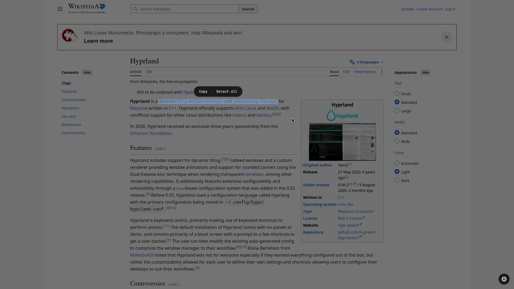
Reading languages
The gear in the bottom-right corner (shown after a scan) opens the settings. Tick the languages to read with. A language you do not have shows a Download button with two options: download it directly into ~/.local/share/scribe/tessdata (no password), or see the package manager command for your distro, with buttons to copy it or run it in your terminal.
| Distro | Command shown (needs a password) |
|---|---|
| Arch, CachyOS, Manjaro | sudo pacman -S --needed tesseract-data-<code> |
| Debian, Ubuntu, Mint | sudo apt-get install -y tesseract-ocr-<code> |
| Fedora, RHEL | sudo dnf install -y tesseract-langpack-<code> |
| Alpine | sudo apk add tesseract-ocr-data-<code> |
scribe never asks for your password itself. Whichever language you read with, tesseract does the reading on your machine.
Translation
Translation is off until you switch it on. While it is off nothing is downloaded, loaded or sent for it and the Translate button does not exist. (Smart actions, described below, are separate: they only use a small local helper.)
Switch it on
Open the gear, find TRANSLATION and turn on Enable translation. A card appears first and says what it will do:
- Internet. Installing offline translation downloads about 350 MB once (PyPI packages and Argos Translate models). If you pick the online engine, the text that was read is sent to the MyMemory service.
- Memory. The model is loaded when you press Translate (260 to 440 MB) and released after two idle minutes.
- Disk. About 470 MB under
~/.local/share/scribe-translate. Remove deletes it. - While it is off nothing is downloaded, loaded or run.
Press Enable to confirm or Cancel to leave it off. The switch alone never enables anything: it only opens this card.
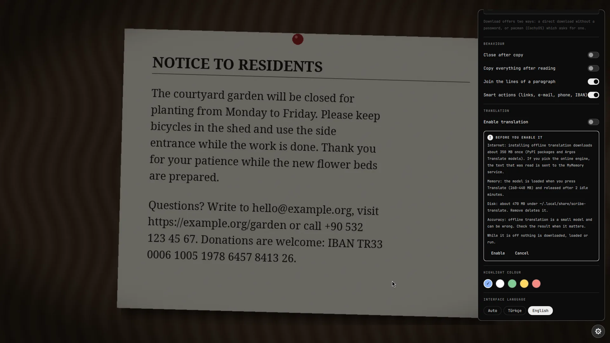
Translate what was read
After a scan, press Translate. It sits under the read region; when you have selected words it is also in the selection toolbar and then translates only the selection. With Translate right after reading on in the settings it starts by itself (that loads the model on every read, so it is off by default). If you close the card, the same button brings it back.
Two views
Pick one in the settings under Result view.
- Card. The original and the translation side by side, with the language direction on top and a swap button. The original is editable: fix a misread word and the translation refreshes about a second after you stop typing. Copy translation and Copy original are at the bottom.
- In place. The translation is painted over the text itself, with the type size chosen so it fits the region. A small bar below has translation | original to switch back and forth, Copy, and Edit, which jumps to the card for correcting the text.
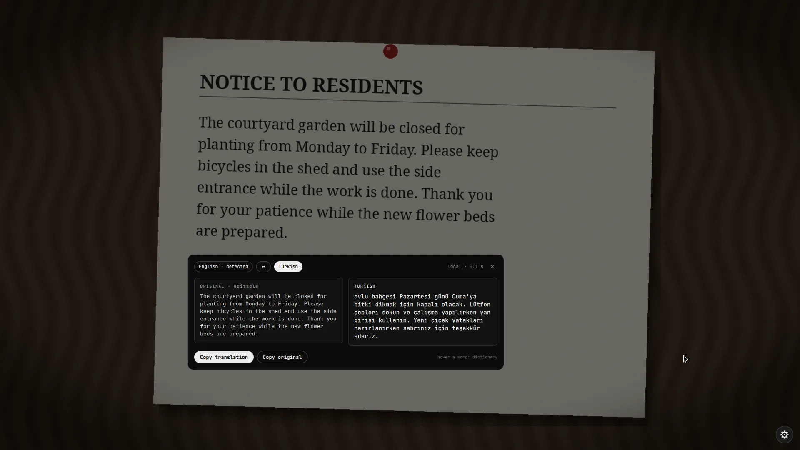
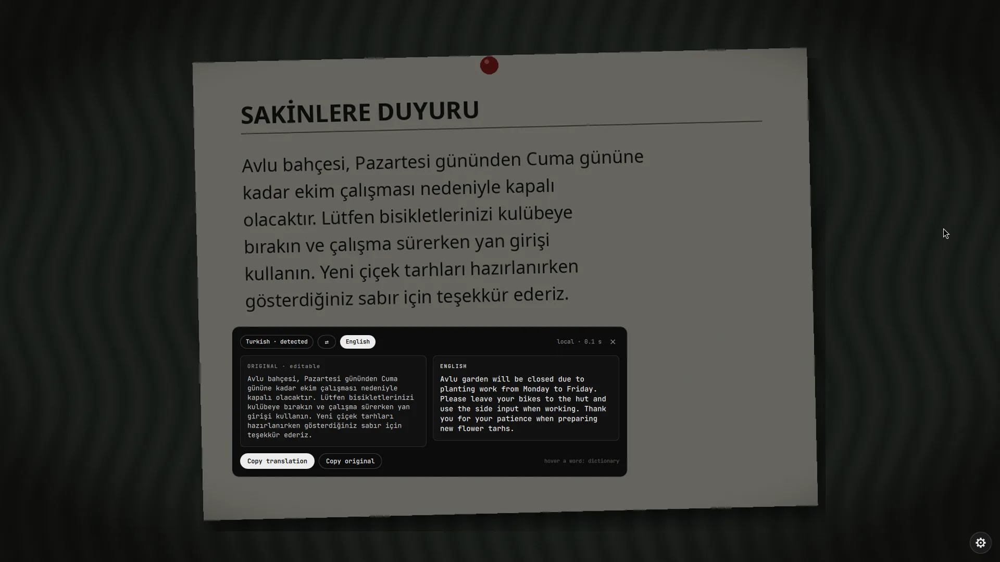
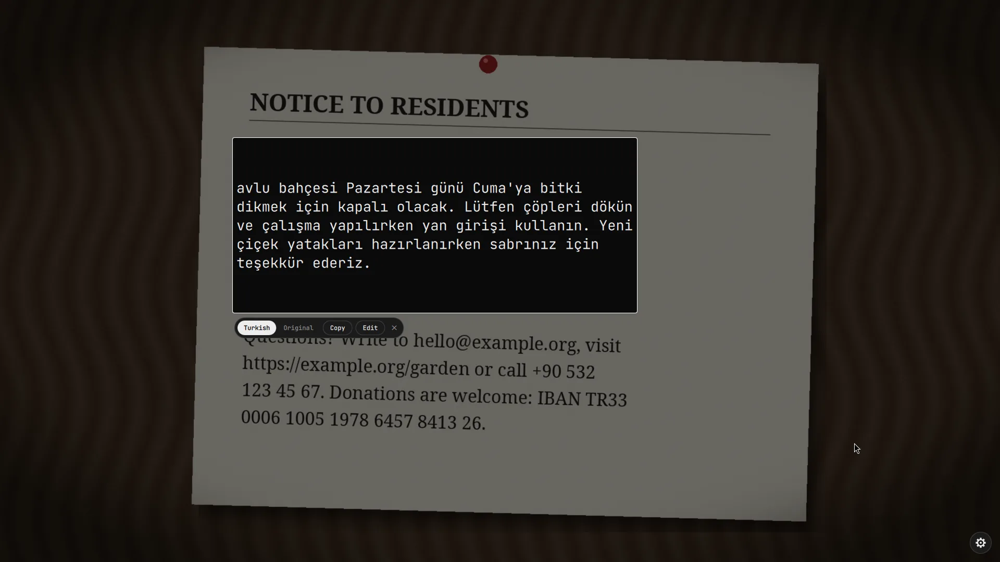
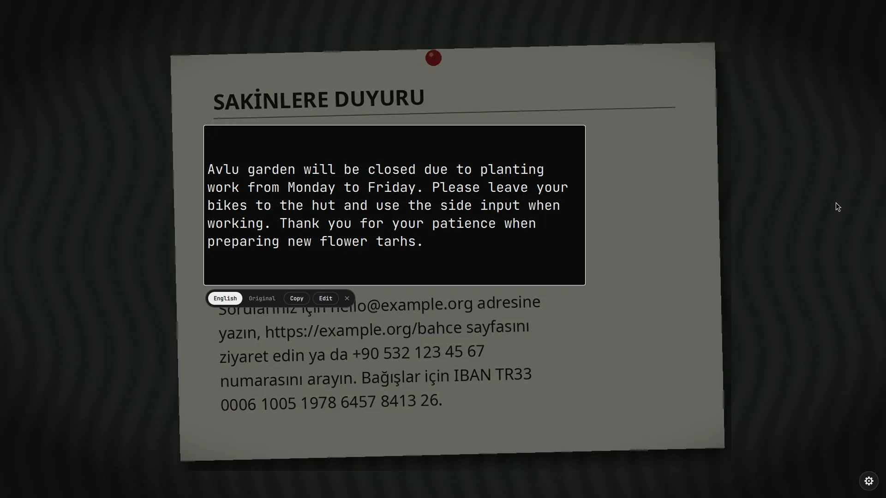
Dictionary
While a translation is open, hover a word (in the original or in the translation). After a short pause a bubble shows its translation and a few alternatives. Click the bubble to copy it. When the model has no equivalent for a word it says so instead of inventing one. The dictionary uses the translation model, so it only works while a translation is open: hovering never loads the model by itself.
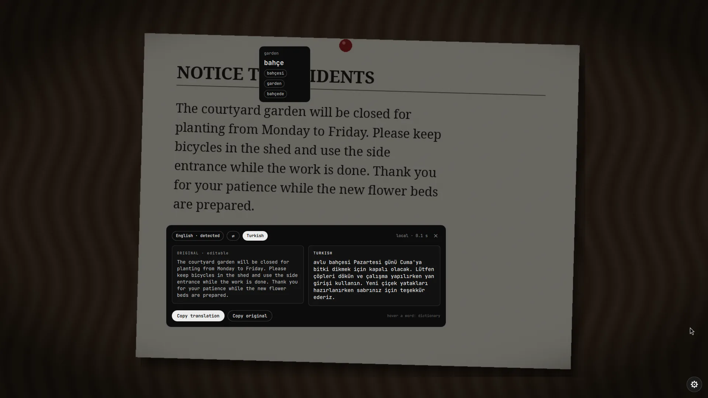
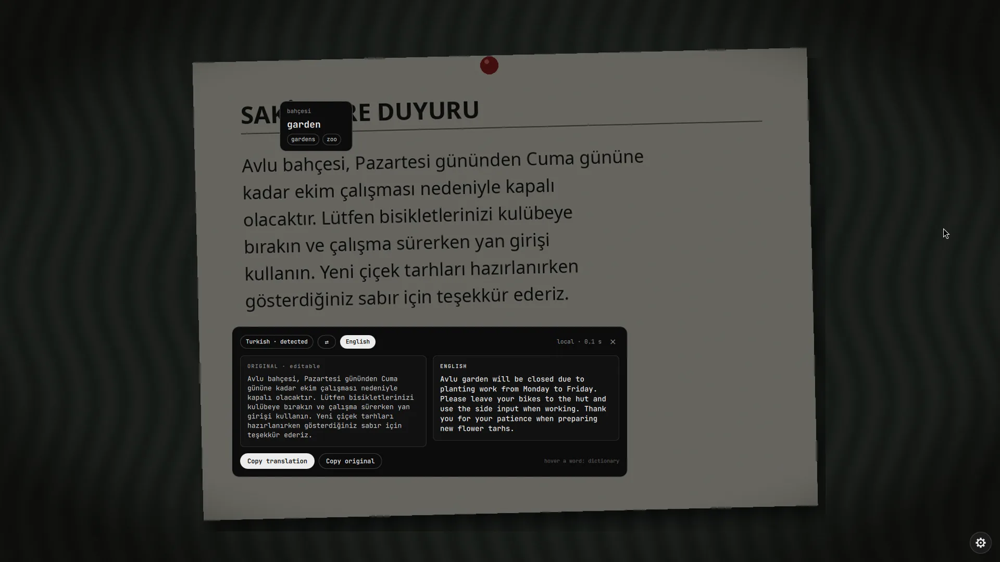
Smart actions
Under the read region, links, e-mail addresses, phone numbers and IBANs found in the text become buttons:
| Found | Button does |
|---|---|
| link | opens it (only http and https) |
opens your mail program (mailto:) | |
| phone number | copies it with one click |
| IBAN | copies it with one click, after checking its mod 97 checksum |
These are kept out of the translation: they are replaced by placeholders before the text is translated and put back afterwards, so example.com never turns into something else. They also never leave your computer, even with the online engine.
Smart actions work without translation: they appear as soon as the text is read, with translation switched off too. They only run a small local helper (no model, no network). After you copy a number scribe closes, like after Copy (unless Close after copy is off). Turn them off with Smart actions under Behaviour in the settings.
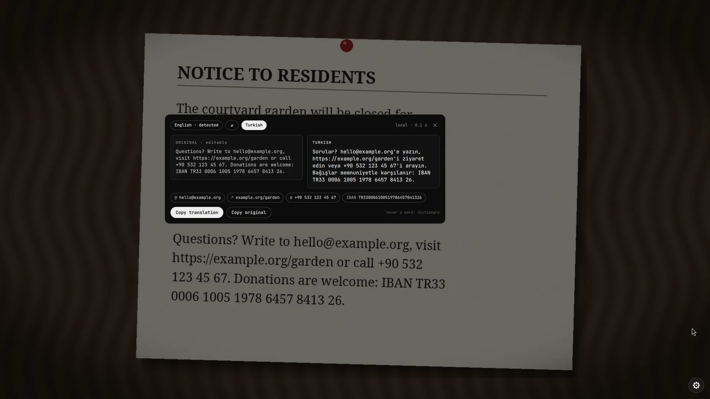
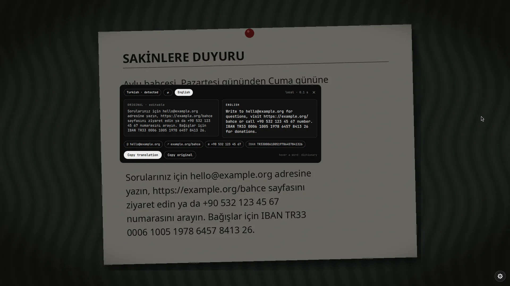
Languages
| Engine | Languages | Where the text goes |
|---|---|---|
| Offline | English ↔ Turkish | nowhere, it stays on your computer |
| Online (MyMemory) | 14 languages: tr, en, de, fr, es, it, pt, ru, nl, pl, ar, ja, ko, zh | to the MyMemory service, after you agreed |
Target language is the language you translate into. Source language is Auto by default: scribe looks at the text, and when it is already in the target language it translates the other way (Turkish text to English, English to Turkish).
Offline engine
The offline engine is CTranslate2 with Argos Translate models, English ↔ Turkish. It runs on your CPU, in an isolated Python environment, and never touches the system Python.
Install, reinstall, remove
In the settings, under Translation > Offline translation, the card shows whether it is installed, which pairs, the disk use and whether the service is running. Download and install sets it up (a progress bar shows the steps), Reinstall repairs it, Remove deletes the environment and the models.
The first time you press Translate without the pack, a card offers Download or Use online right there.
What gets installed
| What | Pinned to |
|---|---|
ctranslate2 | 4.8.2 |
sentencepiece | 0.2.2 |
numpy | 2.5.3 |
pyyaml | 6.0.3 |
| model English → Turkish | argos-net.com, SHA-256 2d553a00…0316a |
| model Turkish → English | argos-net.com, SHA-256 15217905…4ac2d |
Packages are installed as wheels only (pip --only-binary=:all: --isolated), so no setup.py ever runs. Each model is downloaded over HTTPS from one host (redirects to anything else are refused), capped at 200 MiB, and its SHA-256 must match the value in the code, otherwise the download is discarded. The archive is unpacked only after every entry was checked for path escapes and a size limit.
Memory and speed
- Nothing is loaded until you press Translate. The first translation starts a small service that keeps the model in memory (260 MB loaded, up to 440 MB after translating) and quits by itself after two idle minutes.
- Typical times on a desktop CPU: reading a region 0.15 to 0.25 s, the first translation about 0.4 s (the service starts), later ones about 0.15 s.
- The service talks over a socket in
$XDG_RUNTIME_DIR(mode 600). Its log is~/.local/share/scribe-translate/daemon.log.
Mistakes to expect
Offline translation can be wrong. The model is small: it is good for the gist and for short passages, and weaker on long or idiomatic text and on terms it never saw. Check the result when it matters, and fix the original in the card first if the reader misread a word.
Mistakes we saw in our own test photos:
- A word taken for the subject. The Turkish "Avlu bahçesi, Pazartesi gününden Cuma gününe kadar ekim çalışması nedeniyle kapalı olacaktır." came out as "Avlu garden will be closed due to planting work from Monday to Friday." The model took Avlu (courtyard) for a name and left it untranslated.
- Rare words left as they are. A technical word such as compositor can come back unchanged. The dictionary then says so instead of inventing alternatives.
- A damaged sentence gives a damaged translation. When the reader splits a sentence in two or misreads a letter, the translation follows. scribe rejoins a sentence the reader split in the middle, but a misread letter still travels through: that is what the editable original in the card is for.
- Idioms and long sentences are translated word by word more often than a person would.
The online engine (MyMemory) is usually better on idioms but sends your text away, and has its own mistakes.
Online engine
Set Translation engine to Online (or press Use online on the missing-pack card) to translate any of the 14 languages through MyMemory.
The text you translate leaves your computer. Do not use it for passwords, private messages or anything you would not send to a third party. Use the offline engine for those.
- scribe asks first, with Send once, Always allow (stored as
tOnline) and Cancel. - Links, e-mail addresses and IBANs are replaced by placeholders before sending and stay local.
- Requests are limited to 500 characters, so longer text is split at sentence ends. Anonymous use is limited to about 5,000 characters a day.
- An optional MyMemory e-mail in the settings raises the daily limit to 50,000 characters. It is added to the request and is visible in the process list while the request runs.
- If the quota is used up scribe says so; the offline engine keeps working.
Accuracy
We measured how well scribe reads text instead of guessing. A known paragraph (about 330 characters, in English and in Turkish) was drawn with 11 fonts, 9 colour schemes and 3 sizes, then damaged the way a photo is damaged, and every image was read with ocr.py, the same reader that runs when you press the key. Chars is character accuracy (1 minus the edit distance divided by the length), words is the share of the words that were read back in order. 904 runs in total.
The short version. On clean text scribe reads 99.6% of the characters correctly in English and 99.9% in Turkish, across every font, colour scheme and size we tried (the worst single case was 93.3%). On our two sample photos it reads 99.8% (English) and 97.0% (Turkish). The weak spots are tilted text (about 54.2% at 3 degrees) and strong uneven light (about 82.8%). Handwriting is not supported and was not tested.
Clean text, overall
| Text | Chars | Words | Worst case (chars) | Runs |
|---|---|---|---|---|
| English | 99.6% | 98.4% | 93.3% | 297 |
| Turkish | 99.9% | 99.4% | 96.7% | 297 |
Read with scribe's default languages (tur+eng). Picking the single matching language changed little: at 16 px English read 99.3% with eng against 99.7% with the default, Turkish 97.9% with tur against 99.9%. The default is the better choice.
By font
| Font | English chars | English words | Turkish chars | Turkish words |
|---|---|---|---|---|
| JetBrains Mono | 100.0% | 100.0% | 100.0% | 100.0% |
| DejaVu Sans Mono | 100.0% | 100.0% | 100.0% | 99.8% |
| Hack | 100.0% | 100.0% | 99.9% | 99.8% |
| Noto Serif Italic | 99.9% | 98.7% | 100.0% | 100.0% |
| Noto Sans Bold | 100.0% | 100.0% | 99.8% | 98.2% |
| Noto Serif | 99.8% | 98.4% | 100.0% | 100.0% |
| Liberation Sans | 99.7% | 100.0% | 100.0% | 100.0% |
| Noto Sans | 99.6% | 100.0% | 100.0% | 99.8% |
| Cantarell | 99.5% | 97.7% | 100.0% | 100.0% |
| Noto Serif Display | 98.7% | 91.3% | 99.5% | 98.3% |
| Iosevka | 98.5% | 96.7% | 99.6% | 97.1% |
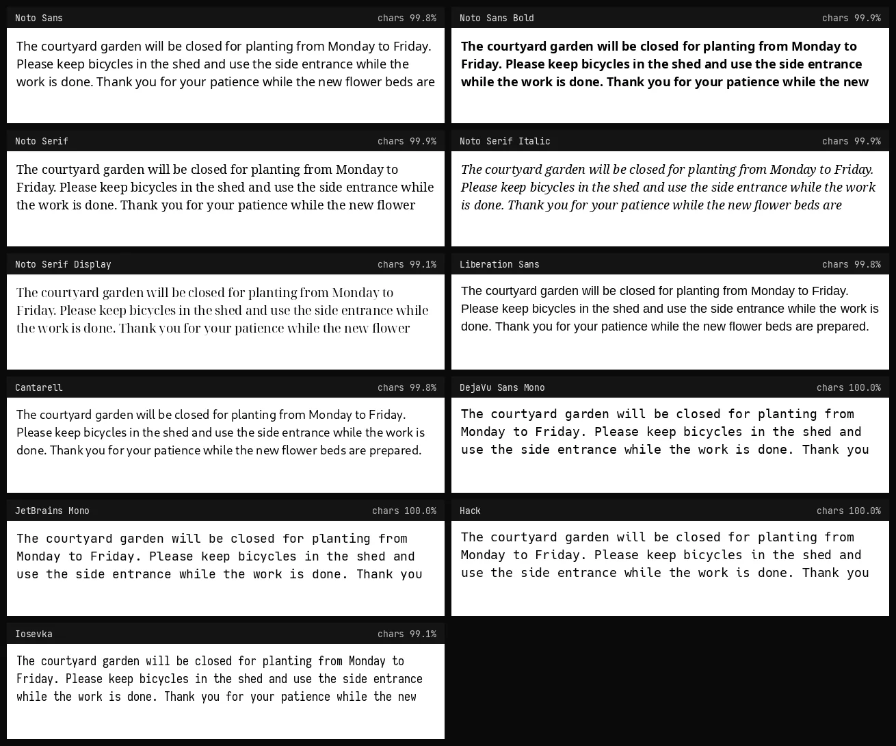
Thin display faces (Noto Serif Display) and very narrow ones (Iosevka) are the weakest; sans and serif text faces, monospace code fonts and bold text are all at or near 100%.
By colour
| Colours | Contrast | English chars | Turkish chars |
|---|---|---|---|
| green on black (terminal) | 9.3:1 | 99.7% | 99.9% |
| yellow on dark blue | 12.3:1 | 99.7% | 99.9% |
| white on black | 21.0:1 | 99.7% | 99.9% |
| white on a busy background | 6.9:1 | 99.7% | 99.8% |
| light on dark theme | 13.4:1 | 99.6% | 99.9% |
| black on white | 21.0:1 | 99.5% | 99.9% |
| dark grey on light grey | 8.0:1 | 99.5% | 99.9% |
| grey on white (low contrast) | 3.0:1 | 99.5% | 99.9% |
| red on white | 6.1:1 | 99.5% | 99.9% |
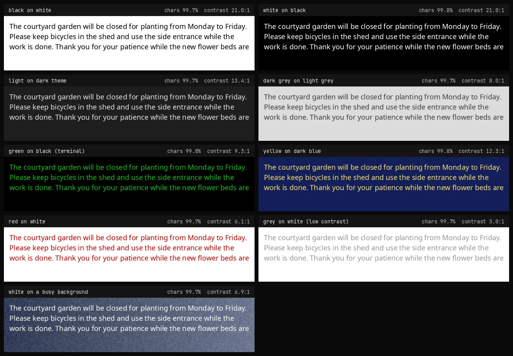
Colour barely matters. Light on dark is read as well as dark on light (scribe inverts dark backgrounds before reading), terminal green and yellow on blue are fine, and even 2.9:1 grey on white stays above 99%. Text over a noisy background loses a little, mostly in words.
By size
| Size | English chars | English words | Turkish chars | Turkish words |
|---|---|---|---|---|
| 12 px | 99.4% | 97.6% | 99.8% | 99.2% |
| 16 px | 99.7% | 98.1% | 99.9% | 99.6% |
| 22 px | 99.7% | 99.6% | 99.9% | 99.3% |
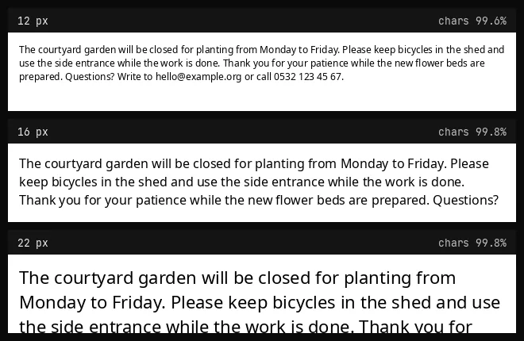
Smaller text costs a little, mostly in whole words. We did not go below 12 px; text under about 10 px is not read reliably.
Damaged like a photo
The same renders after rotation, blur, grain, JPEG compression, low resolution and uneven light (Noto Sans, Noto Serif and DejaVu Sans Mono, dark on light and light on dark, 16 px).
| Damage | English chars | English words | Turkish chars | Turkish words |
|---|---|---|---|---|
| rotated 3 degrees | 35.9% | 35.3% | 35.5% | 30.1% |
| rotated 8 degrees | 28.6% | 15.7% | 27.4% | 17.6% |
| blurred (radius 1.2) | 97.4% | 93.7% | 99.8% | 98.6% |
| grain (noise 20) | 99.8% | 100.0% | 99.9% | 99.1% |
| JPEG quality 25 | 99.9% | 98.7% | 99.9% | 99.1% |
| low resolution (55%) | 99.3% | 94.7% | 99.7% | 98.1% |
| uneven light | 83.7% | 81.0% | 82.0% | 81.5% |
| photo-like (all together) | 41.0% | 36.0% | 41.6% | 32.4% |
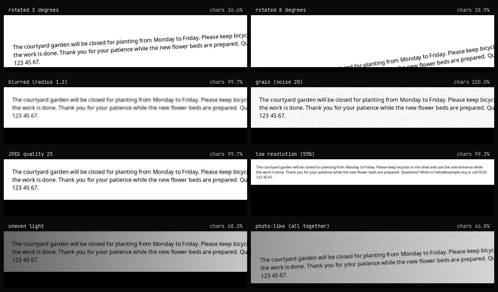
Blur, grain, JPEG artefacts and low resolution are handled well. Tilt and strong uneven light are not.
How much tilt is too much?
| Tilt | English chars | English words | Turkish chars | Turkish words |
|---|---|---|---|---|
| 0 degrees | 100.0% | 100.0% | 100.0% | 100.0% |
| 0.5 degrees | 100.0% | 100.0% | 100.0% | 100.0% |
| 1 degree | 91.9% | 94.0% | 100.0% | 100.0% |
| 2 degrees | 78.2% | 78.0% | 99.0% | 94.4% |
| 3 degrees | 51.4% | 50.0% | 57.0% | 61.1% |
| 5 degrees | 45.4% | 44.0% | 36.4% | 30.6% |
| 8 degrees | 31.3% | 28.0% | 32.8% | 13.9% |
A paragraph of 24 px text, 700 px wide, rotated by the given angle. Up to half a degree nothing is lost; from about 1 to 2 degrees accuracy starts to drop (between 78% and 100%, depending on the text); from 3 degrees on roughly half of the text is lost. scribe does not straighten tilted text. For a tilted sign or page, select a narrower region or one line at a time, or straighten the picture first.
Two sample photos
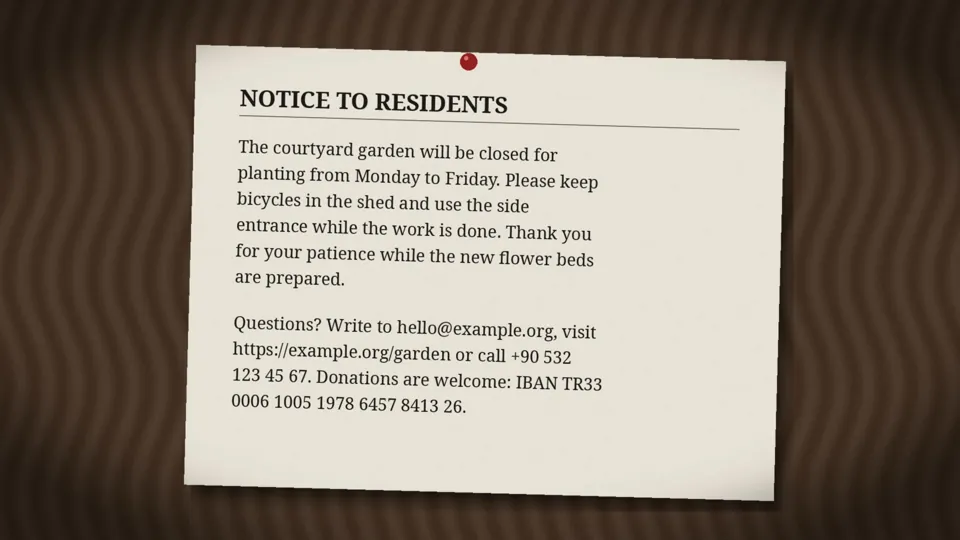
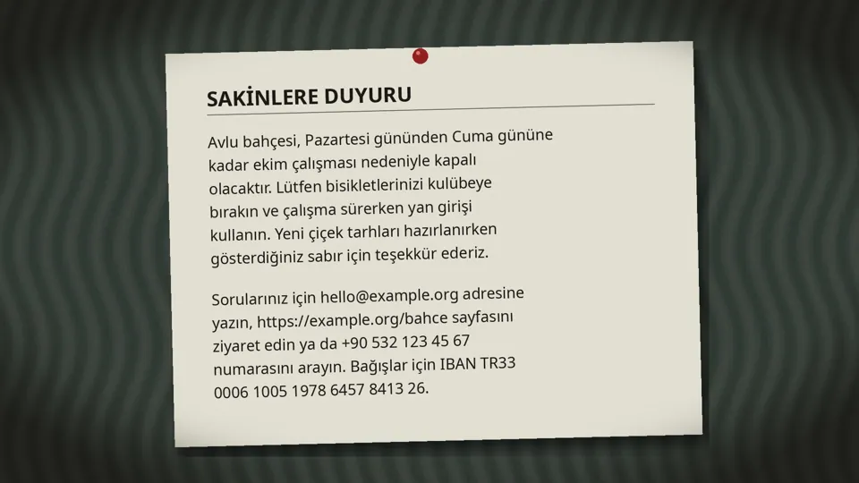
Whole picture, title, paragraph and contact lines together, slightly tilted (1.6 and 1.4 degrees), with shadows, vignette, grain and blur. Turkish is a little lower because of lost accents (for example icin for için). These are made-up photos; tools/sample_photos.py draws them, so you can read them yourself. A real phone photo will usually be somewhat worse.
Translation
There is no reference translation to score the offline model against, so there is no accuracy percentage for the translated words, and we will not invent one. What can be measured is that links, e-mail addresses, phone numbers and IBANs are not touched: tools/translation_check.py translated 104 sentences containing them in both directions and all 104 came back unchanged. For the kind of mistakes the model does make, see Mistakes to expect.
Not tested
- Handwriting (not supported).
- Scripts other than Latin, and text in languages whose Tesseract pack is not installed.
- Real phone photographs, perspective distortion, curved or vertical text.
- Text smaller than 12 px, and tilt together with small text on a wide region (the stress rows above are the nearest we measured).
- The online engine's quality, and the quality of the translated words.
Run it yourself
python3 tools/accuracy.py # all runs, about 30 minutes; --stress-only for the damaged set python3 tools/sample_photos.py out/ # the two sample photos python3 tools/translation_check.py # needs the offline pack
Every run is in results.json. The fonts that were measured here are the ones installed on the author's machine; fonts that are not installed are skipped.
Settings reference
Everything is stored in ~/.config/scribe/settings.json (created on the first change, mode 600). config.py validates every key and value, so a hand-edited or corrupted file can never feed odd values to the rest of the module.
| Key | Default | Meaning |
|---|---|---|
langs | "tur+eng" | Tesseract language codes joined with + |
autoCopy | false | copy all text as soon as the read finishes |
closeAfterCopy | true | close the overlay shortly after copying |
joinLines | true | join the lines of a paragraph with spaces |
minConfidence | 60 | below this average confidence the result is flagged as unsure |
highlight | "#8ab4f8" | selection colour |
ui | "auto" | interface language: auto, tr or en |
translate | false | master switch for everything translation related |
autoTranslate | false | translate as soon as the text is read (loads the model then) |
tView | "card" | card or inplace |
tEngine | "offline" | offline or online |
tTarget | "tr" | target language (14 codes) |
tSource | "auto" | source language or auto |
tOnline | false | standing permission to send text to the online service |
tEmail | "" | optional MyMemory e-mail |
smartActions | true | links, e-mail, phone and IBAN as buttons (works without translation) |
dictionary | true | hover dictionary (needs an open translation) |
editable | true | the read text can be corrected in the card |
Command line
The helpers can be used on their own. Text always goes in on stdin, never as an argument.
scribe.sh read shot.png 0 0 800 400 1 tur+eng # one line per word: W par line x y w h text, then CONF n printf 'The window is open.' | python3 -I translate.py translate --tgt tr printf 'layout' | python3 -I translate.py lookup --src en --tgt tr printf 'see https://example.com' | python3 -I translate.py entities python3 -I translate.py status # offline pack: installed, size, service, memory python3 -I translate.py install # same as the settings button (pinned and verified) python3 -I translate.py remove # delete the environment and the models python3 -I config.py read # the settings as one JSON line
translate.py answers with one line of JSON. Failures carry a code (no_model, no_runtime, online_blocked, network, offline_failed, no_text) that the interface turns into its own message.
Privacy and security
scribe takes a screenshot of one monitor, so it is written to leave nothing behind. The full list of what it reads, writes and limits is in SECURITY.md. In short:
- The screenshot lives in
$XDG_RUNTIME_DIR/scribe(mode 700, in memory) and is deleted when the overlay closes. There is no/tmpfallback. - Copied and translated text goes to
wl-copyandtranslate.pyon stdin, never on a command line where other users could read it. - With translation off, the only network request is a language pack download you start yourself. (Smart actions run a local helper, never the network.)
- With translation on: the offline pack (pinned packages, SHA-256 verified models) is downloaded when you press install, and text only leaves your computer through the online engine, after you agreed.
- It never runs a privileged command. The only program besides
notify-sendit starts isxdg-open, for a link found in the text, after its scheme was checked. - No telemetry, no update check, no account.
Troubleshooting
| Problem | What to check |
|---|---|
| There is no Translate button | Translation is off. Gear, Translation, Enable translation. |
| "pack is not installed" | Press Download on the card, or use the offline section in the settings. Only English ↔ Turkish exists offline; other pairs need the online engine. |
| Install fails | Needs python3 -m venv and internet. The error is shown in the card; run python3 -I translate.py install to see it in a terminal. |
| The first translation is slow | The service starts and loads the model (about 0.4 s). Later ones are about 0.15 s. |
| Online translation fails | No connection, or the daily quota is used up. Add an e-mail in the settings or use the offline engine. |
| Memory stays used | The model is released two minutes after the last translation. python3 -I translate.py stop releases it at once. |
| Text is read wrong | Pick the reading languages in the settings, select a tighter region, or fix the word in the card before translating. |
Development
python3 -m unittest discover -s tests -v # 65 tests, no network, no model, no Quickshell ruff check . shellcheck -S style scribe.sh install.sh
The tests cover the settings validation, the file modes, the installer, the entity detection, the pinning and verification of downloads, the unpack guards, the stdin rule and the "off means off" guards. CI runs ruff, shellcheck and the tests.
The development helpers answer only while the file $XDG_RUNTIME_DIR/scribe-dev exists:
qs -p Shell.qml ipc call scribe test 340 120 700 260 # read a region, skip the drag qs -p Shell.qml ipc call scribe devopen # open the settings panel qs -p Shell.qml ipc call scribe cancel # close everything